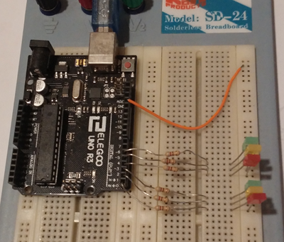
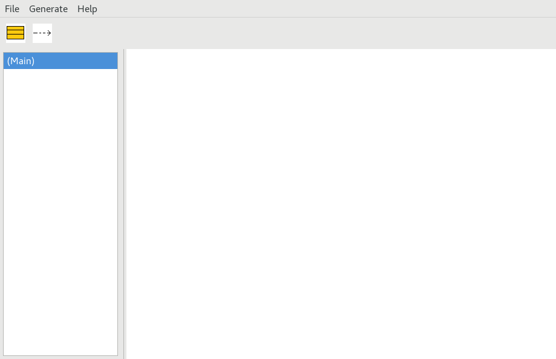
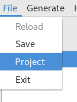

Learning by Example
This document follows the “Learning by Example” rules. We will start
with an example, trying to details everything, defining the default
model and how does it run.
Our example is based on the Arduino architecture and the related
code editor.
I opted for Arduino instead of a AT48, or a PIC24FJ128 because you
have probably already heard of it, due to the fact that is an
immediate platform, ready to be programmed everywhere with an USB,
largely used for hobby and unprofessional works.
Anyway if your micro supports at least a C-99 compliant compiler,
this model should work like a charm. I used previous versions of SunRize
to develop several professional works from 8 to a 32 bit CPU.
The evidenced rows, represent the real
reference documentation indicating the model structure and the
tool usage.
Requirements
SunRiZe is a programmers tools, so this document uses a
technical language.
In order to read and understand this document, you should know at
least:
- The C language
- The basic rules of Micro Controllers programming and
elementary hardware.
If you know that, we can proceed.
Building a traffic semaphore
Arduino and SunRiZe
As you probably know the Arduino 1 architecture is based on a AVR
micro processor (ATmega328) with a specific PCB an a (strange) IDE.
As we said, SunRiZe is not specifically designed for Arduino
, it is designed to realize projects with a proper make file and a
complete tool-chain, with multiple program files and compiled
libraries.
The simplified paradigm that is not UML is designed to
produce C code and not C++, because it is expressly
designed for small micro, when you don’t even have a dynamic memory
manager and in this case, I found the C++ underused, heavy and
unnecessarily complicated.
If you don’t have an Arduino piece of hardware, I suggest you to
make or buy one, after all is Open Hardware.
A bit of bit
For people who does not know exactly Arduino is made, on a side it
has a classic 0.1 inches connector with 14 IO ports exposed.
The first 8 ports, from 0 to 7 are connected to the PORTD , while
the ports from 8 to 13, are connected to the first 6 bit (0-5) of
the PORTB of an AVR cpu, usually ATmega328.
At the moment we will use these 3 registers of Arduino :
- PORTD output D
- PIND input D
- DDRD Data Direction Register D (1 output, 0 input)
We need to build a simplified semaphore, so we will connect six LED
to the input port, Red, Yellow and Green. In order to mark the
different directions, we will call them D (as direct) and C
(as cross), the resulting connection to the PORT D follow
this order :

PORTD
7
|
6
|
5
|
4
|
3
|
2
|
1
|
0
|
NA
|
NA
|
GD
|
YD
|
RD
|
GC
|
YC
|
RC
|
Running SunRiZe
If you have a compiled version of SunRiZe you will probably
have a folder with and executable, some library (if any) and a file
named GenCode.js that is the Javascript Code Generator.
The location of these file does not matter because SunRiZe
will start everything from its folder.
We need to create a folder project separately as previously
indicated in Documents (where we do prefer). We are creating a
traffic semaphore, so we can name the folder "Semaphore" with
the subfolder Arduino and the links as previously indicated.
Now we can click and run the SunRiZe executable :
At first we can open the drop down menu “File” and
then click Project :

The folder choice dialog box is opening and we can select
the “Semaphore” folder we have previously created, accepting
to create a new model inside.
After selecting the project folder, we can Save the project and the
file "model.srz" will be placed into it.
The next time we select the folder the project will be loaded
automatically.
Reload is used to restore the project
to the last saved state, if
we have done something wrong : this action will delete the current
changes to the latest Save.
We are ready to design our first module now.